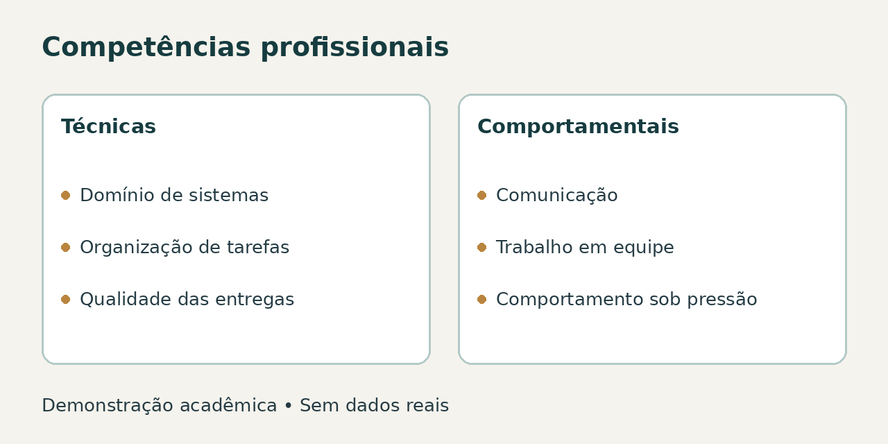

Competências avaliadas
- Domínio de sistemas: utilizar as ferramentas de trabalho com atenção e autonomia.
- Organização de tarefas: acompanhar prioridades e cumprir os prazos das atividades.
- Qualidade das entregas: conferir informações e reduzir erros e retrabalho.
- Comunicação: transmitir informações com clareza e escutar as orientações.
- Trabalho em equipe: colaborar e compartilhar informações com os colegas.
- Comportamento sob pressão: manter o respeito e comunicar dificuldades em momentos de maior demanda.
Competências técnicas e comportamentais

Avaliação de competências
Considere a rotina de trabalho e atribua notas de 1 a 5 a cada competência.
Utilize somente códigos de demonstração, como ADM-001.
Prévia de Resultados
Visão geral das competências e das notas atribuídas.
Dados de demonstração.
| Colaborador | Competência | Nota (1 a 5) |
|---|---|---|
| ADM-001 | Domínio de sistemas | 4 |
| ADM-002 | Organização de tarefas | 3 |
| ADM-003 | Qualidade das entregas | 5 |
| ADM-004 | Comunicação | 4 |
| ADM-005 | Trabalho em equipe | 5 |
| ADM-006 | Comportamento sob pressão | 3 |
Como avaliar competências
Conheça as competências, confira o preenchimento e explore a prévia de resultados.